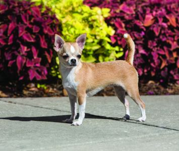

| Image |
My Favorite Dog Breeds |
Description |
 |
Siberian Husky |
These dogs are part of the Spitz breed. They come from places with cold climates, like the the place that it got its name which is Siberia. They have thick fur covering them, light colored eyes (mostly blue or green), and they are taller than some other breeds. |
 |
Pomeranian |
Pomeranians are small dogs with thick fur. Sometimes, though, they are larger than the usual (Pomeranian) dog. They come in different colors, most usually white, and/or brown. They have small, dark eyes and their tails are curved (mostly upwards). |
|
 |
Chihuahua |
The smallest dogs in the world are actually Chihuahuas. Their furs are either short and soft, or long and spikey (but still pretty soft). Their ears are upright. They also have more length than height, with long tails (that curve up). |
 |
Shih Tzu |
Shih Tzu have ears that are floppy and do not go up. They have long fur, and the length varies (some naturally have long furs, while some naturally have short ones. They have two long clumps of fur on either side of their nose (like a moustache) and they are short dogs. |
 |
Chow Chow |
This breed is most known for their thick fur, especially around their heads, that makes them "look like lions". They are also known for having small ears that resemble that of a bear's ears. They are of medium height, but their legs aren't that long. They also originated from China. |
 |
Shiba Inu |
Shiba Inus come from Japan. They have a similar appearance to that of a fox, especially with their face and ears. Their furs aren't that long or short, but it is pretty thick. Their tails are also thick and long. Their eyes are very dark, and they look like beads.z |